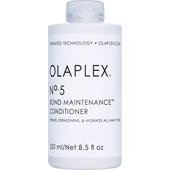

ABOUT PAUL MATCHELL CONDITIONERS: takes care of the extra portion of moistness in hair and on the scalp. The PM Care range is particularly suited for normal to dry hair; a large amount of the product can be used for daily care with no problems. The hydrating essences balance out the moisture content, embed moisture deep in the scalp and hair fibres, and stops hair from becoming bristly and prone to frizz, as well as making long hair much easier to comb. The range comes in a shining clear white, topped off with a blue cap.
Hydrating care from hair product expertsThe PM Care Hydrate range brings products to a finish, but also has special infusions and emulsions which can be used in large quantities at regular intervals. The PM care range has been expanded to include a shampoo with matching conditioner, and a mask which also can be used at intervals. The overall result is a holistic haircare concept, which also hydrates extremely dry hair efficiently and gives it back its natural sleekness, and also prevents hair from thinning out and breaking off. The products are equally suitable for men and women.
PRICE:550 {SMALL}
R700 {MEDIUM}
R1309 {LARGE}
STOCK AVAILABILITY: We have 30 olaplex conditioners left.
| weight | dimension | barcode |
| 280ml | 2(70+60) |